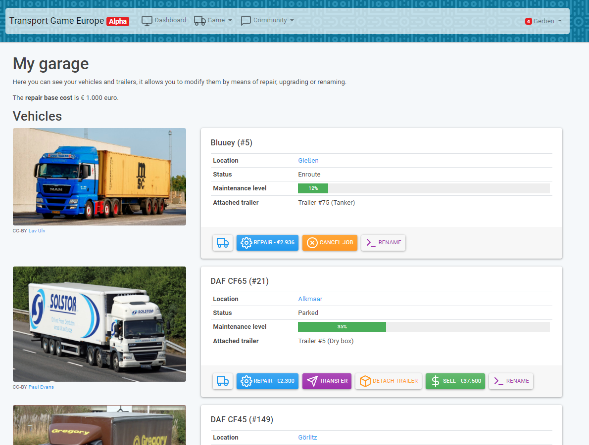
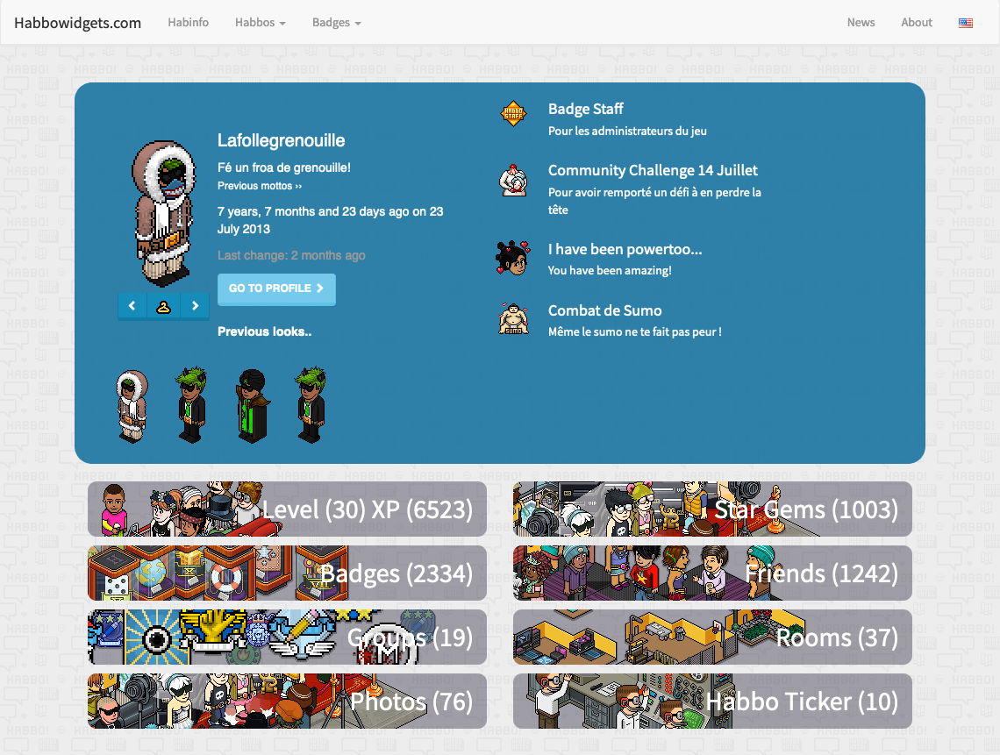
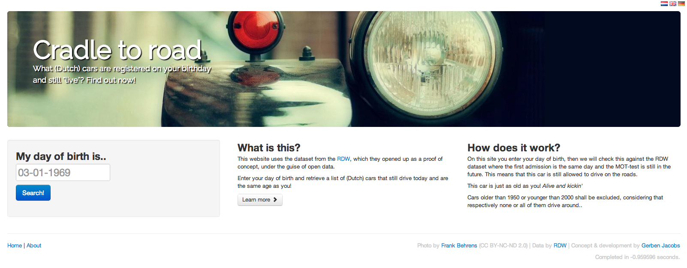
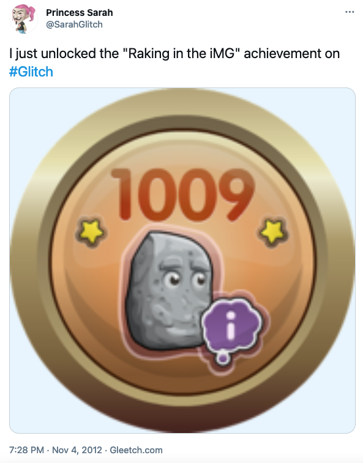
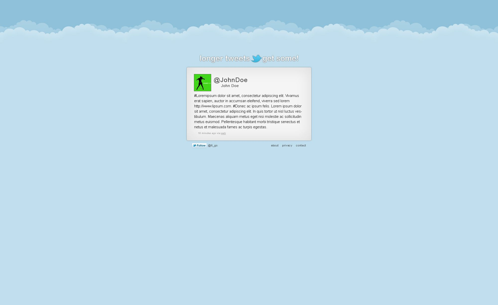
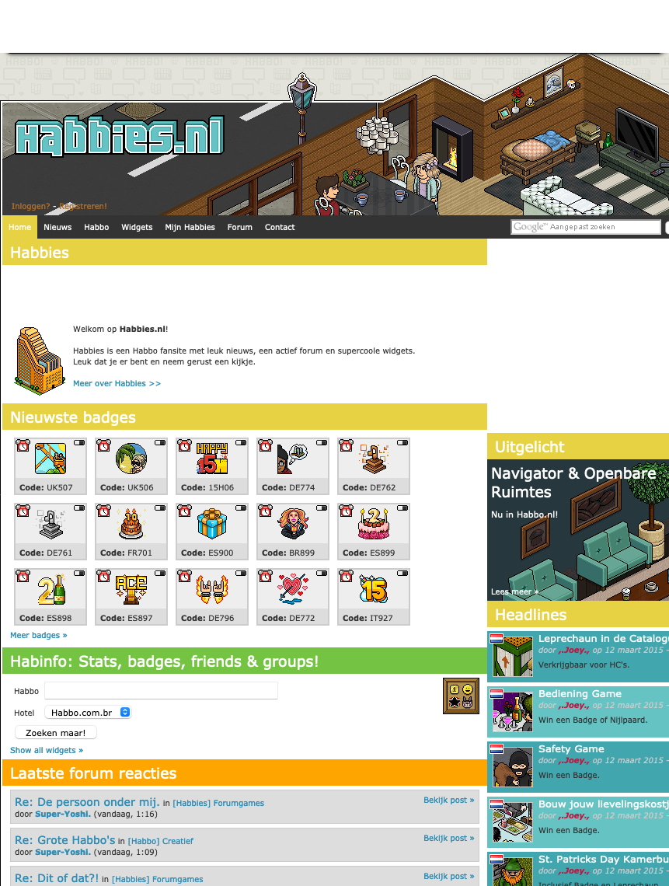

gerben.dev 👷♂️
Welcome to my personal online presence.
Check out some of my projects below or head over to my blog.
🚛 Transport Game Europe
Since Apr. 11th, 2019
A free-to-play persistent browser based game where you can run your own transport company.
Be in charge of buying vehicles and trailers, accepting and assigning jobs and maintaining the operations and finances of your own company.
A mobile friendly browser text game with trucks, trailers, cargo and much more. Released in alpha state to gauge feasibility.
🏨 Habbowidgets.com
Since Nov. 1st, 2015
A site dedicated to Habbo Hotel, using the self-written HabboAPI library that uses Habbo's unofficial and undocumented API.
Allows users to search their (and their friends') profile along with its subresources such as badges, friends, groups, rooms and photos.
The site is well-visited with the majority of visitors coming from Brazil and the US. Visitor numbers are 4.6k, 19k, 66k for daily, weekly and monthly retrospectively. (As of January 2022)
These are archived projects.
🚗 Wieg Tot Weg
From Sept. 2012 - Sept. 2013
"Cradle To Road" was a h6 PHP project that I made for a competition organized by the RDW (Dutch Vehicle Authority). I ended up with 3rd place and used the money to buy an iMac.
The app allowed you to enter your birthday (or birthdate) and would return the vehicles on the Dutch roads which were registered on the same date and as such would share your birthdate.
The older you were, the more difficult it was to find a road legal car that hadn't broken down!
🔮 Gleetch.com
From Oct. 2011 - Dec. 2012
Glitch (whimsical MMO made in Flash) + Tweet = Gleetch. Gleetch was an app that allowed you to link your Glitch account with your Twitter account and have it tweet out your achievements. See example Twitter account.
The app died with the unfortunate demise of Glitch the game itself. The team then made Slack, so I guess good on them ;)
🐦 Longer Tweets, Get Some (lt.gs)
From Jun. 2011 - Jan. 2015
A service that lets you post longer tweets. The USP of this service is that the site will use your Twitter design on the website to make the transition from twitter.com to lt.gs as smooth as possible.
Fun fact: the domain is a backcronym and was picked for its short length; the full name was created later.
👵 Habbies.nl
From Sept. 2008 - Jan. 2016
A community for (kids &) teens about the social network Habbo.nl. Averaging 800 unique visitors per day and 25k unique visitors a month.
It used to have some tools (called "widgets") that were quite popular with non-Dutch visitors and it eventually evolved into Habbowidgets.com.
